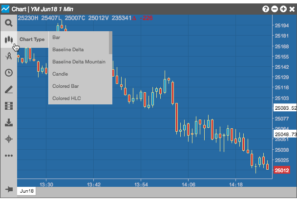
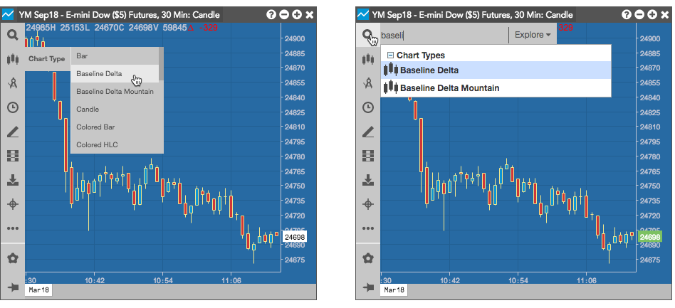
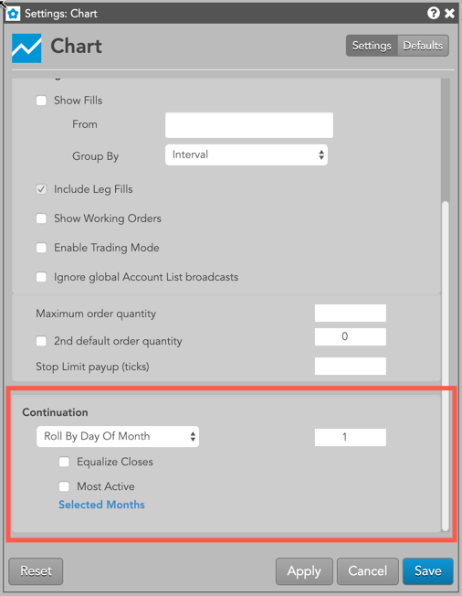
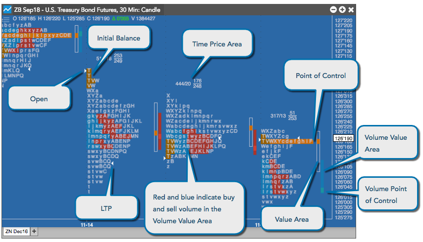
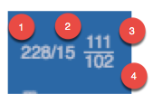
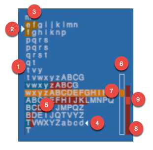
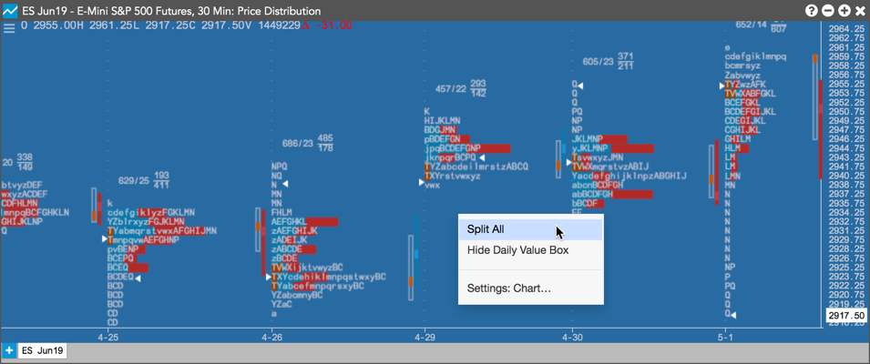
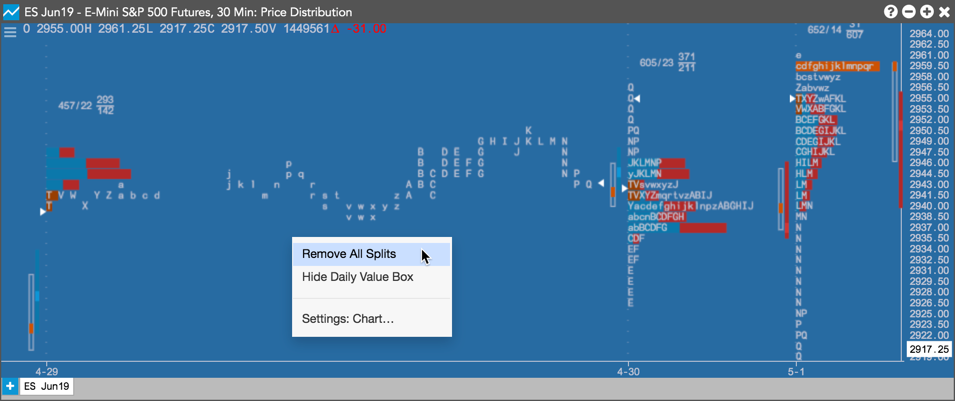

TT offers a variety of chart types to help you display chart data in several different formats. Chart types can be accessed from the Chart Types menu and from Search, as shown.


TT offers the following chart types:
For Candle, Bar, Colored Bar, and Hollow Candle charts:
In addition, the color of the bar determines how the chart is read:
A continuation chart splices together several consecutive expiry months to form a seamless chart.
The rollover from one expiry to the next is illustrated by an alternating colored line at the bottom of the chart as well as dotted lines along the y-axis.
You can create and configure a Continuation Chart by right-clicking in a chart and selecting Settings: Chart...

To create a continuation chart you select one of the roll-over options from the contract roll drop-down in the Continuation section of Chart Settings. This section provides a number of options for defining how you would like the chart to display the roll between expirys.
The Price Distribution chart displays the distribution of price over time. It includes the Initial Balance Range, opening price, a current price marker, the Time Price Area (TPA letters) value area, and the Tick Volume Distribution.

The Time Price Area (TPA) provides a summary of the letters in the chart.

The Time Price Area (TPA) letter summary provides the following information about the letters in the chart.
The number of letters within the Time Price Area (TPA)
The number of letters at the point of control (POC)
The number of letters above the point of control
The number of letters below the point of control
The main part of the chart provides the following information about the price distribution during a trading day.
The letters represent the consecutive 30-minute slices of the trading day.
The arrow pointing to the right identifies the open. The price is the first actual traded price, not the last session's close.
The dark orange shading indicates the Initial Balance Range, which represents the first two TPA letters of the day.
The arrow pointing left identifies the last traded price (LTP) of the distribution.
The dark blue and red letter shading indicates the buy and sell volumes in the Volume Value Area.
The TPA Value Area indicates where 70% of the TPA letters occurred.
The light orange shading in the TPA and in the TPA Value area identifies the point of control, which is the largest number of TPA letters for the distribution.
The Volume Value Area indicates where 70% of the volume distribution occurred.
The small block in the Volume Value Area represents the volume point of control.
On a Price Distribution chart, you can separate a TPA into columns for a clearer view of the distributions and breaks. To separate a TPA, right-click on the distribution and select Split All from the context menu.

To return the TPA back to its original position, right-click on the distribution and select Remove All Splits.

Time Price Area (TPA) letters are assigned in 30 minute periods. They are plotted using the letter that is in progress at the beginning of each 30 minute period.
{% include chart-tpa-letters.html %}The value area is calculated by first identifying the price with the greatest volume. Using this, the volume of the two adjacent prices above are summed and the volume of the two adjacent prices below are summed. These totaled volumes are then compared and the larger of the two is added to the value area. This process continues until 70 percent of the volume is contained within the value area. Value area can be calculated using either the actual volume at price numbers or approximated by using TPA letter counts at price levels.
Note: You can change the percentage to use for calculations in the Chart settings.